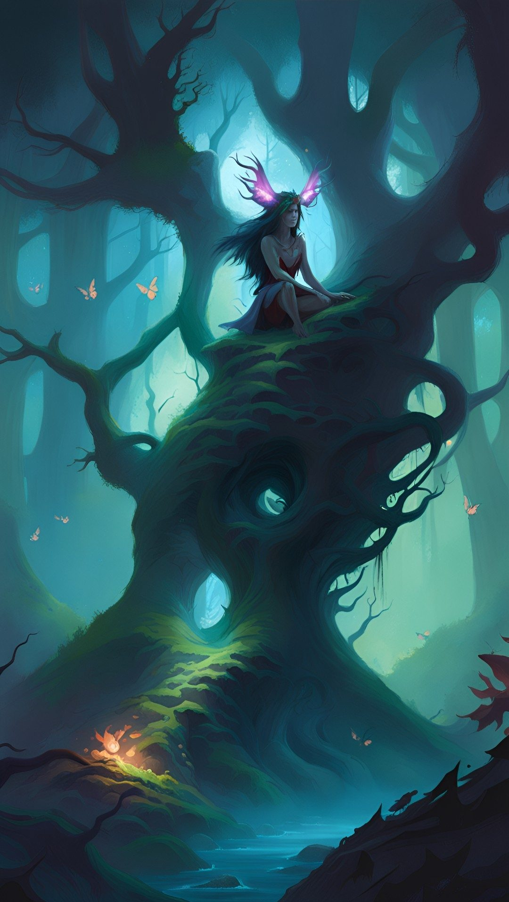
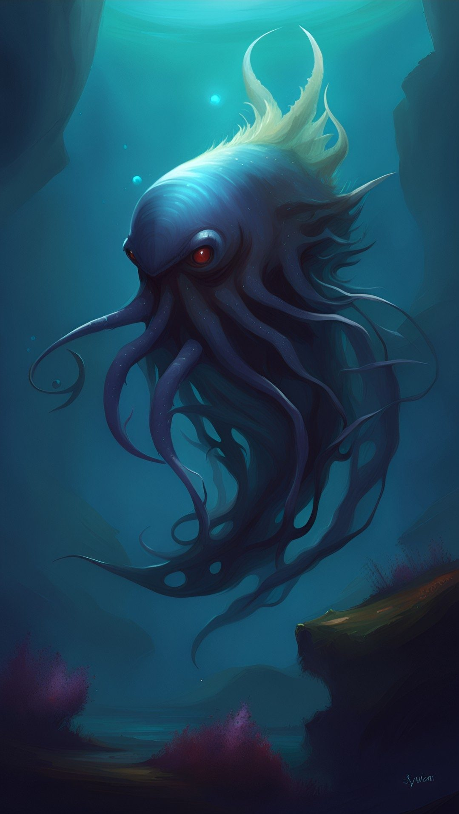
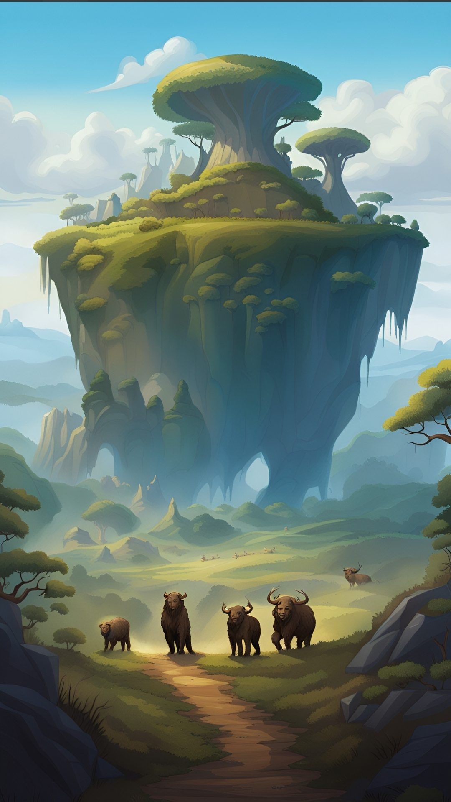
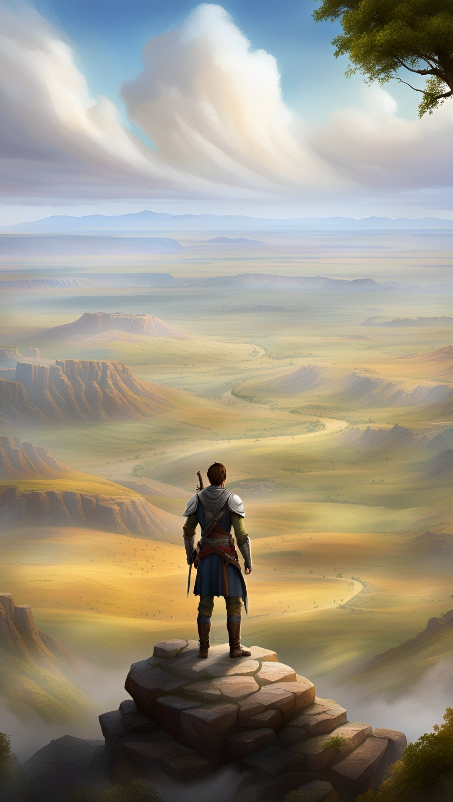

Definitions


Amar is populated by a generous wildlife as well as several humanoids and other creatures. The Game Master is adviced to use the online character and random encounter generator to automate encounters and make game play swift and efficient.
Please note that in creating encounters manually, the Game Master will roll dice to determine attributes and skills. As usual, a D6 means to roll one 6-sided dice, 2D6 means rolling two dice and adding them for a total, while D6/2+2 means "roll a dice, divide by two (round up) and add two to get the total. An O6 means an open-ended roll with a 6-sided dice (see The Character) and 3O6+5 would mean to roll three open-ended dice and adding 5 for the total score.
Attack skills are given in parenthesis behind the weapon(s). The skill is modified by the Off/Def given. Add the Damage Bonus for the encounter to the weapon's Dam to get the total damage for the weapon.
For humanoids, the potential for each attribute is also given (when there are two numbers, the first is for males, the other for females).
Base movement in flat terrain (plains) for every creature is covered under each encounter ("Move"). The base movement for humans is 30 kilometers per day. This includes carrying equipment/weapons/armor, resting and meal breaks and travelling 10 hours per day. The movement in combat is the base movement in meters x0.4 per round (i.e. 12 for humans)
Animals


These are just some of the notable animals enriching the Kingdom of Amar.
Creatures


These are the most notable creatures in the Kingdom.
Individuals
There are many interesting individuals in Amar - so-called Non-Player Characters (NPCs for short). They are played by the Game Master whenever the Player Characters (PCs) meet them. Some of these are listed on this page: NPCs.
Encounter tables


There is an online Amar random encounter generator for Game Masters.
If the Game Master wants to roll manually for encounter, use the tables below.
Encounters are rolled for (D6) 3 times per day and once per night.
| 1 | Local encounter |
| 2 | No encounter |
| 3 | No encounter |
| 4 | No encounter |
| 5 | Encounter if on road (otherwise, tracks/sounds) |
| 6 | Encounter |
| Rural | Plain | Hills | Mountain | Forest | |
|---|---|---|---|---|---|
| Small animal | 1 | 1-2 | 1-2 | 1-2 | 1-2 |
| Large animal | 2 | 3 | 3 | 3-4 | 3-4 |
| Human | 3-5 | 4-5 | 4-5 | 5 | 5 |
| Special | 6 | 6 | 6 | 6 | 6 |
Small animals include dogs, cats, rodents, martens, birds and reptiles.
| Rural | Plain | Hills | Mountain | Forest | |
|---|---|---|---|---|---|
| Cattle | 1-2 | 1-2 | 1 | 1 | 1 |
| Pig/Warthog | 3-4 | 3 | 2 | 2 | |
| Deer/Horse | 5 | 4 | 3 | 2-3 | 3 |
| Bear | 4 | 4 | 4 | ||
| Wolf | 6 | 5 | 5 | 5 | 5 |
| Large Cat | 6 | 6 | 6 | 6 |
| 1-2 | Sleeping/dormant |
| 3-4 | Hunting/fleeing |
| 5-6 | Eating |
| Rural | Plain | Hills | Mountain | Forest | |
|---|---|---|---|---|---|
| Residents | 1-2 | 1 | 1 | 1 | 1 |
| Caravan | 2 | 2 | 2 | 2 | |
| Officials/Soldiers | 3 | 3 | 3 | 3 | 3 |
| Adventurers/Criminals | 4 | 4 | 4 | 4 | 4 |
| Traveling Merchant(s) | 5 | 5 | 5 | 5 | 5 |
| GM's choice | 6 | 6 | 6 | 6 | 6 |
| Rural | Plain | Hills | Mountain | Forest | |
|---|---|---|---|---|---|
| Farmer | 1-2 | 1 | 1 | 1 | |
| Hunter/Fisherman/Forester | 2 | 2 | 2-3 | 1-2 | |
| Laborers/Craftsmen | 3 | 3 | 3 | 4 | 3 |
| Servants | 4 | 4 | 4 | 5 | 4 |
| High Class | 5 | 5 | 5 | 5 | |
| GM's choice | 6 | 6 | 6 | 6 | 6 |
| 1 | Eating/drinking/gambling/hanging around etc. |
| 2 | To/from market/church/temple/friends etc. |
| 3 | Seeking/offering directions/services/employment/lodgings etc. |
| 4 | On errand/bringing a message. |
| 5 | Working. |
| 6 | Working. |
| 1 | Guarding. |
| 2 | On patrol/collecting taxes/inspecting businesses. |
| 3 | On mission, moving/guarding cargo. |
| 4 | Investigating crime/hunting criminal(s). |
| 5 | Recruiting or seeking employment. |
| 6 | Off duty. |
| 1 | Eating/drinking/gambling/dividing loot etc. |
| 2 | To/from adventure/raid. |
| 3 | Escorting goods/smuggling. |
| 4 | Seeking/offering services or goods. |
| 5 | Escaping law/service or hunting criminals. |
| 6 | Engaging in fight/raid/robbery etc. |
| Rural | Plain | Hills | Mountain | Forest | |
|---|---|---|---|---|---|
| Roll 2X on original table | 1-2 | 1 | 1 | 1 | 1 |
| Special event | 3 | 2 | 2 | 2 | 2 |
| Humanoid | 4 | 3 | 3 | 3 | 3 |
| Monster | 5 | 4-5 | 4-5 | 4-5 | 4-5 |
| GM's choice | 6 | 6 | 6 | 6 | 6 |
| Rural | Plain | Hills | Mountain | Forest | |
|---|---|---|---|---|---|
| Tracks/sounds (reroll for what) | 1 | 1 | 1 | 1 | 1 |
| Animal trap | 2 | ||||
| Spoilage/food loss | 2 | 2 | 2 | 2 | 3 |
| Equipment loss/horse wounded | 3 | 3 | 3 | 2 | 3 |
| Party lost | 4 | 4 | 3 | 4 | |
| Landslide/avalanche | 4 | ||||
| Bog | 5 | ||||
| Extreme weather/flood | 4-5 | 5 | 5 | 5 | 5 |
| GM's choice | 6 | 6 | 6 | 6 | 6 |
| Rural | Plain | Hills | Mountain | Forest | |
|---|---|---|---|---|---|
| Arax | 1 | 1 | 1 | 1 | 1 |
| Trollkin/Troll (50/50) | 2 | 2 | 2 | 2 | 2 |
| Ogre | 3 | 3 | |||
| Elf | 3 | 3 | 3-4 | ||
| Dwarf | 4-5 | 4-5 | 4-5 | 4-6 | |
| Goblin | 6 | 6 | 6 | 5-6 |
| Rural | Plain | Hills | Mountain | Forest | |
|---|---|---|---|---|---|
| Giant spider | 1 | ||||
| Cave lion | 1 | 1 | 1 | 2 | |
| Faerie | 1-2 | 2 | 2 | 2 | 3 |
| Werewolf | 3 | 3 | 3 | 3 | 4 |
| Vampire | 4 | 4 | 4 | 3 | 4 |
| Demon | 5 | 5 | 5 | 4-5 | 5 |
| GM's choice | 6 | 6 | 6 | 6 | 6 |
Next: Mythology
- Arax Dodge : 2 (BODY 1 + Athletics 1 + 2 = 4 ) Hide : 2 (BODY 1 + Athletics 1 + 2 = 4 ) Move Quietly : 2 (BODY 1 + Athletics 1 + 2 = 4 ) Survival Lore (D6+2) Climb (D6+1) …
- Brown Bear Dodge : 0 (BODY 2 + Athletics 1 + 0 = 3 ) Hide : 0 (BODY 2 + Athletics 1 + 0 = 3 ) Move Quietly : 0 (BODY 2 + Athletics 1 + 0 = 3 ) Typical specimen.
- Cave Lion Dodge : 2 (BODY 2 + Athletics 1 + 2 = 5 ) Hide : 5 (BODY 2 + Athletics 1 + 5 = 8 ) Move Quietly : 7 (BODY 2 + Athletics 1 + 7 = 10 ) Typical specimen.
- Centaur Dodge : 2 (BODY 1 + Athletics 1 + 2 = 4 ) Hide : 0 (BODY 1 + Athletics 1 + 0 = 2 ) Move Quietly : 0 (BODY 1 + Athletics 1 + 0 = 2 ) Survival Lore (O6+2) Play Flute …
- Deer Dodge : 0 (BODY 1 + Athletics 2 + 0 = 3 ) Hide : 0 (BODY 1 + Athletics 2 + 0 = 3 ) Move Quietly : 2 (BODY 1 + Athletics 2 + 2 = 5 ) Typical specimen.
- Demon Dodge : 3 (BODY 1 + Athletics 3 + 3 = 7 ) Hide : 3 (BODY 1 + Athletics 3 + 3 = 7 ) Move Quietly : 3 (BODY 1 + Athletics 3 + 3 = 7 ) Any weapon (as the weapon) Typical specimen.
- Dragon Dodge : 1 (BODY 2 + Athletics 1 + 1 = 4 ) Hide : 0 (BODY 2 + Athletics 1 + 0 = 3 ) Move Quietly : 0 (BODY 2 + Athletics 1 + 0 = 3 ) Typical specimen.
- Drake Dodge : 7 (BODY 6 + Athletics 2 + 7 = 15 ) Hide : 0 (BODY 6 + Athletics 2 + 0 = 8 ) Move Quietly : 0 (BODY 6 + Athletics 2 + 0 = 8 ) Typical specimen.
- Dwarf Dodge : 0 (BODY 2 + Athletics 1 + 0 = 3 ) Hide : 1 (BODY 2 + Athletics 1 + 1 = 4 ) Move Quietly : 1 (BODY 2 + Athletics 1 + 1 = 4 ) Craft (weapon/armor/…) (2O6) Any …
- Elf Dodge : 0 (BODY 2 + Athletics 5 + 0 = 7 ) Hide : 3 (BODY 2 + Athletics 5 + 3 = 10 ) Move Quietly : 3 (BODY 2 + Athletics 5 + 3 = 10 ) Any weapon (as the weapon) Typical specimen.
- Faerie Dodge : 6 (BODY 1 + Athletics 3 + 6 = 10 ) Hide : 6 (BODY 1 + Athletics 3 + 6 = 10 ) Move Quietly : 6 (BODY 1 + Athletics 3 + 6 = 10 ) Any weapon (as the weapon) Typical specimen.
- Giant Dodge : 0 (BODY 3 + Athletics 0 + 0 = 3 ) Hide : 0 (BODY 3 + Athletics 0 + 0 = 3 ) Move Quietly : 0 (BODY 3 + Athletics 0 + 0 = 3 ) Any weapon (as the weapon) Typical specimen.
- Giant spider Dodge : 1 (BODY 1 + Athletics 2 + 1 = 4 ) Hide : 3 (BODY 1 + Athletics 2 + 3 = 6 ) Move Quietly : 3 (BODY 1 + Athletics 2 + 3 = 6 ) Typical specimen.
- Goblin Dodge : 1 (BODY 1 + Athletics 5 + 1 = 7 ) Hide : 1 (BODY 1 + Athletics 5 + 1 = 7 ) Move Quietly : 1 (BODY 1 + Athletics 5 + 1 = 7 ) Any weapon (as the weapon) Typical specimen.
- Griffin Dodge : 0 (BODY 1 + Athletics 4 + 0 = 5 ) Hide : 0 (BODY 1 + Athletics 4 + 0 = 5 ) Move Quietly : 0 (BODY 1 + Athletics 4 + 0 = 5 ) Typical specimen.
- Hag Dodge : 2 (BODY 1 + Athletics 1 + 2 = 4 ) Hide : 4 (BODY 1 + Athletics 1 + 4 = 6 ) Move Quietly : 4 (BODY 1 + Athletics 1 + 4 = 6 ) Black Magick Lore (O6+4) Typical specimen.
- Horse Dodge : 0 (BODY 1 + Athletics 1 + 0 = 2 ) Hide : 0 (BODY 1 + Athletics 1 + 0 = 2 ) Move Quietly : 0 (BODY 1 + Athletics 1 + 0 = 2 ) Typical specimen.
- Human Dodge : 0 (BODY 1 + Athletics 3 + 0 = 4 ) Hide : 0 (BODY 1 + Athletics 3 + 0 = 4 ) Move Quietly : 0 (BODY 1 + Athletics 3 + 0 = 4 ) Any weapon (as the weapon) Typical specimen.
- King Eagle Dodge : 0 (BODY 1 + Athletics 5 + 0 = 6 ) Hide : 0 (BODY 1 + Athletics 5 + 0 = 6 ) Move Quietly : 2 (BODY 1 + Athletics 5 + 2 = 8 ) Typical specimen.
- Lizard Man Dodge : 0 (BODY 2 + Athletics 1 + 0 = 3 ) Hide : 1 (BODY 2 + Athletics 1 + 1 = 4 ) Move Quietly : 1 (BODY 2 + Athletics 1 + 1 = 4 ) Any weapon (as the weapon) Typical specimen.
- Merfolk Dodge : 0 (BODY 1 + Athletics 3 + 0 = 4 ) Hide : 0 (BODY 1 + Athletics 3 + 0 = 4 ) Move Quietly : 3 (BODY 1 + Athletics 3 + 3 = 7 ) Typical specimen.
- Moose Dodge : 0 (BODY 1 + Athletics 1 + 0 = 2 ) Hide : 0 (BODY 1 + Athletics 1 + 0 = 2 ) Move Quietly : 0 (BODY 1 + Athletics 1 + 0 = 2 ) Typical specimen.
- Mule Dodge : 0 (BODY 1 + Athletics 1 + 0 = 2 ) Hide : 0 (BODY 1 + Athletics 1 + 0 = 2 ) Move Quietly : 0 (BODY 1 + Athletics 1 + 0 = 2 ) Typical specimen.
- Ogre Dodge : 1 (BODY 2 + Athletics 1 + 1 = 4 ) Hide : 1 (BODY 2 + Athletics 1 + 1 = 4 ) Move Quietly : 1 (BODY 2 + Athletics 1 + 1 = 4 ) Typical specimen.
- Peregrine Falcon Dodge : 0 (BODY 1 + Athletics 5 + 0 = 6 ) Hide : 0 (BODY 1 + Athletics 5 + 0 = 6 ) Move Quietly : 2 (BODY 1 + Athletics 5 + 2 = 8 ) Typical specimen.
- Phooka Dodge : 3 (BODY 1 + Athletics 2 + 3 = 6 ) Hide : 4 (BODY 1 + Athletics 2 + 4 = 7 ) Move Quietly : 4 (BODY 1 + Athletics 2 + 4 = 7 ) Shapeshift (2O6+3) Typical specimen.
- Pig Dodge : 1 (BODY 0 + Athletics 1 + 1 = 2 ) Hide : 1 (BODY 0 + Athletics 1 + 1 = 2 ) Move Quietly : 1 (BODY 0 + Athletics 1 + 1 = 2 ) Typical specimen.
- Ram Dodge : 1 (BODY 1 + Athletics 1 + 1 = 3 ) Hide : 0 (BODY 1 + Athletics 1 + 0 = 2 ) Move Quietly : 1 (BODY 1 + Athletics 1 + 1 = 3 ) Typical specimen.
- Raven Demon Xetus, the Raven Demon, is a summoned trader of forbidden spells.
- Rock-croc Dodge : 0 (BODY 2 + Athletics 1 + 0 = 3 ) Hide : 4 (BODY 2 + Athletics 1 + 4 = 7 ) Move Quietly : 0 (BODY 2 + Athletics 1 + 0 = 3 ) Typical specimen.
- Sparrow Hawk Dodge : 0 (BODY 1 + Athletics 5 + 0 = 6 ) Hide : 0 (BODY 1 + Athletics 5 + 0 = 6 ) Move Quietly : 4 (BODY 1 + Athletics 5 + 4 = 10 ) Typical specimen.
- Spell Searcher Dodge : 1 (BODY 1 + Athletics 2 + 1 = 4 ) Hide : 1 (BODY 1 + Athletics 2 + 1 = 4 ) Move Quietly : 1 (BODY 1 + Athletics 2 + 1 = 4 ) Forbidden Spell Lore (O6+3) Any …
- Treant Dodge : 0 (BODY 3 + Athletics 0 + 0 = 3 ) Hide : 1 (BODY 3 + Athletics 0 + 1 = 4 ) Move Quietly : 7 (BODY 3 + Athletics 0 + 7 = 10 ) Typical specimen.
- Troll Dodge : 0 (BODY 3 + Athletics 0 + 0 = 3 ) Hide : 0 (BODY 3 + Athletics 0 + 0 = 3 ) Move Quietly : 0 (BODY 3 + Athletics 0 + 0 = 3 ) Survical Lore (D6+2) Typical specimen.
- Trollkin Dodge : 1 (BODY 1 + Athletics 2 + 1 = 4 ) Hide : 1 (BODY 1 + Athletics 2 + 1 = 4 ) Move Quietly : 1 (BODY 1 + Athletics 2 + 1 = 4 ) Typical specimen.
- Two-headed badger Dodge : 3 (BODY 1 + Athletics 2 + 3 = 6 ) Hide : 4 (BODY 1 + Athletics 2 + 4 = 7 ) Move Quietly : 5 (BODY 1 + Athletics 2 + 5 = 8 ) Typical specimen.
- Vampire Dodge : 4 (BODY 3 + Athletics 3 + 4 = 10 ) Hide : 4 (BODY 3 + Athletics 3 + 4 = 10 ) Move Quietly : 4 (BODY 3 + Athletics 3 + 4 = 10 ) Any weapon (as the weapon) Typical specimen.
- Werewolf Dodge : 2 (BODY 2 + Athletics 6 + 2 = 10 ) Hide : 2 (BODY 2 + Athletics 6 + 2 = 10 ) Move Quietly : 2 (BODY 2 + Athletics 6 + 2 = 10 ) Typical specimen.
- White Shark Dodge : 1 (BODY 2 + Athletics 2 + 1 = 5 ) Hide : 0 (BODY 2 + Athletics 2 + 0 = 4 ) Move Quietly : 8 (BODY 2 + Athletics 2 + 8 = 12 ) Typical specimen.
- Wild Boar Dodge : 2 (BODY 1 + Athletics 1 + 2 = 4 ) Hide : 2 (BODY 1 + Athletics 1 + 2 = 4 ) Move Quietly : 2 (BODY 1 + Athletics 1 + 2 = 4 ) Typical specimen.
- Wolf Dodge : 1 (BODY 1 + Athletics 2 + 1 = 4 ) Hide : 3 (BODY 1 + Athletics 2 + 3 = 6 ) Move Quietly : 5 (BODY 1 + Athletics 2 + 5 = 8 ) Typical specimen.
- Wyvern Dodge : 0 (BODY 2 + Athletics 2 + 0 = 4 ) Hide : 0 (BODY 2 + Athletics 2 + 0 = 4 ) Move Quietly : 0 (BODY 2 + Athletics 2 + 0 = 4 ) Typical specimen.
- Zombie Dodge : 0 (BODY 2 + Athletics 0 + 0 = 2 ) Hide : 0 (BODY 2 + Athletics 0 + 0 = 2 ) Move Quietly : 0 (BODY 2 + Athletics 0 + 0 = 2 ) Any weapon (as the weapon) Typical specimen.